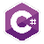
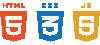
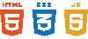

AIVARAS
Kodėl aš programuoju
Sulaukęs jubiliejinio gimtadienio nusprendžiau išmokti kažką įdomaus. Pasirinkimas buvo iš dviejų variantų: motociklo teisių ir parasparnio licenzijos. Taigi taip ir pasirinkau programavimą.
Nors kursai truko 6 savaites, kurios prabėgo žaibišku greičiu, džiaugiuosi, kad susipažinau su šiomis kalbomis:

 
